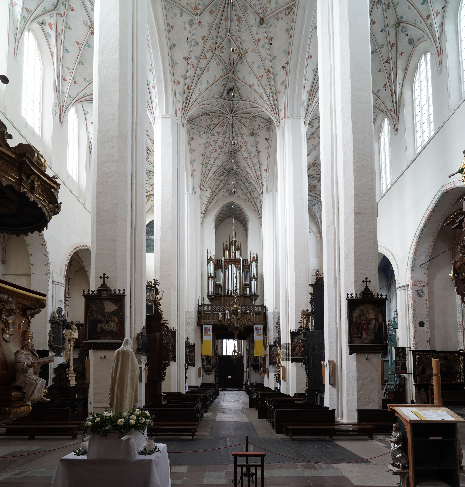
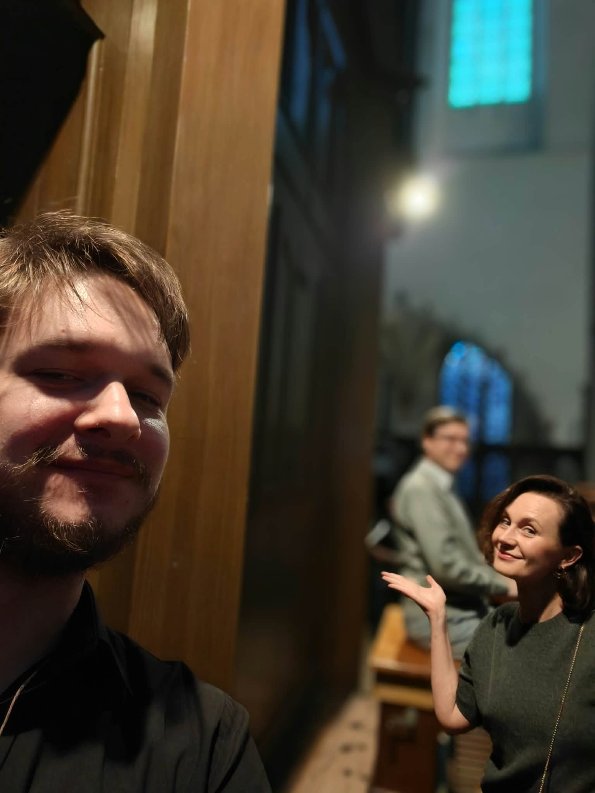
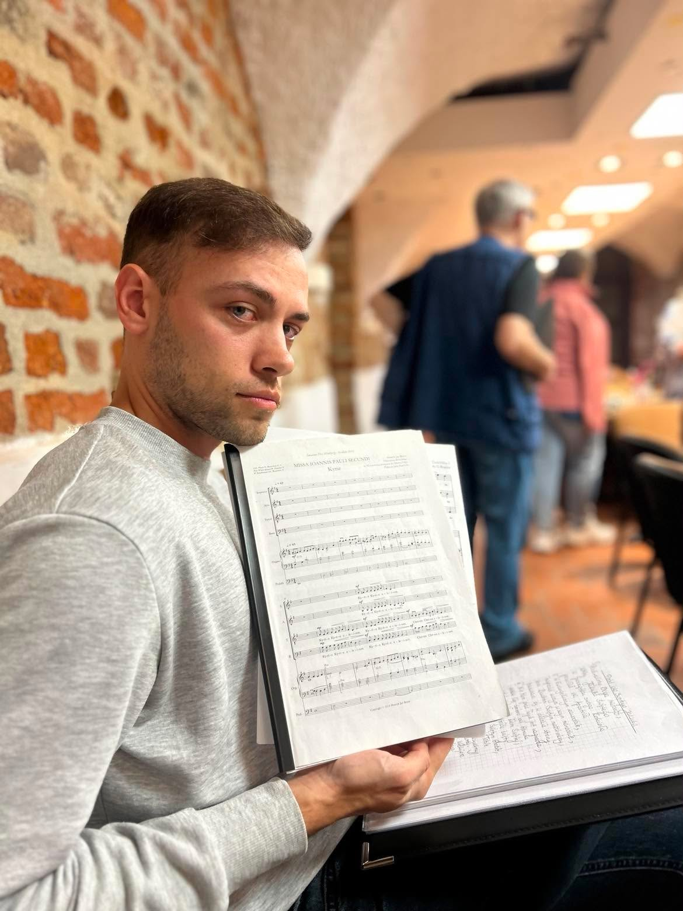

Poznaj naszego dyrygenta
Osoba, która prowadzi nas przez każdą próbę

Prowadzący artystyczny
Dawid Wesołowski
Tu kilka zdań o sobie: wykształcenie, doświadczenie, od kiedy prowadzi chór.
Tu drugi akapit: czym jest dla Ciebie praca z chórem i co jest w niej najważniejsze, albo cokolwiek chcesz.
Chór dzisiaj
00
Aktywnych śpiewaków
Soprany, alty, tenory i basy tworzą pełne, czterogłosowe brzmienie.
00
Utworów w repertuarze
Cała gama utworów sakralnych i nie tylko.
00
Uroczystości w roku
Tu krótki opis.


